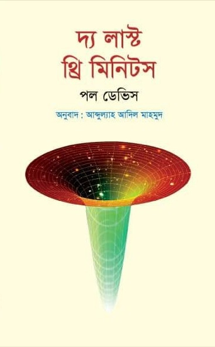

বই5 দ্য লাস্ট থ্রি মিনিটস

Figure 5.1: Cover
এটি অ্যামেরিকান পদার্থবিদ পল ডেভিসের লেখা দ্য লাস্ট থ্রি মিনিটস (The Last Three Minutes) বইয়ের বাংলা অনুবাদ। বইটির মূল আলোচ্য বিষয় মহাবিশ্বের ভবিষ্যৎ।
বর্তমানে আমরা জানি, আজ থেকে প্রায় ১৩৮০ কোটি বছর আগে এক বিস্ফোরণের মাধ্যমে মহাবিশ্বের যাত্রা শুরু। ধীরে ধীরে এতে জন্ম নিয়েছে নক্ষত্র, গ্রহ, নীহারিকা, ছায়াপথ, কৃষ্ণগহবরা। আমরা মহাবিশ্বের যত দূরে তাকাই, মহাবিশ্বের তত আগের অবস্থা দেখতে পাই।
কিন্তু ভবিষ্যৎ? আজ থেকে কয়েক শ কোটি বছর পরে কী ঘটবে মহাবিশ্বের ভাগ্যে?
এটা কি বর্তমানের মতো প্রসারিত হতে থাকবে? নাকি আবার শুরু হবে সঙ্কোচন? পৃথিবীর ভাগ্যেই বা কী আছে? কী আছে ভবিষ্যতের মানুষের ভাগ্যে? সঙ্কোচনশীল মহাবিশ্বটা দেখতে কেমন হবে? এসব প্রশ্নের উত্তর খুব দারুণভাবে দেওয়া হয়েছে বইটিতে।
বইটি নব্বইয়ের দশকে লেখা হলেও এর বিষয়বস্তু বর্তমান সময়েও আবেদন ধরে রাখতে সক্ষ্ম হয়েছে। বইটি লেখার পরে কিছু গুরুত্বপুর্ণ বৈজ্ঞানিক আবিষ্কার ঘটেছে। অনুবাদক পরিশিষ্ট ও এগারোতম অধ্যায়ের শেষের নোটের মাধ্যমে বিজ্ঞানের অগ্রগতিকে বইটির আলোচ্য বিষয়ের সাথে সমন্বয় করেছেন।
5.0.1 বই কিনতে
বইটি একুশে বইমেলা-২০২১-এ প্রকাশিত হয়েছে। পাওয়া যাবে রকমারি ডট কম ও প্রথমা ডট কমে।
- রকমারি লিঙ্ক:লেখকের রকমারি পেইজ
- প্রথমা: লিঙ্ক
5.0.2 লেখক পরিচিতি
পল ডেভিস
Figure 5.2: Author
ইংরেজ পদার্থবিদ। বর্তমানে যুক্তরাষ্ট্রের অ্যারিজোনা স্টেট ইউনিভার্সিটির অধ্যাপক। যুক্ত আছেন ক্যলিফোর্নিয়ার চ্যাপম্যান ইউনিভার্সিটির ইনস্টিটিউট ফর কোয়ান্টাম স্টাডিজ প্রতিষ্ঠানের সাথেও। এর আগে অন্যান্যের মধ্যে ইউনিভার্সিটি অব ক্যামব্রিজ ও ইউনিভার্সিটি কলেজ লন্ডনেও অধ্যাপনা করেছেন। গবেষণার বিষয় কসমোলজি (মহাবিশ্বতত্ত্ব), কোয়ান্টাম ক্ষেত্র তত্ত্ব ও অ্যাস্ট্রোবায়োলজি।
তিনিই প্রথম যৌথ একটি গবেষণাপত্রে দেখিয়েছেন, হকিং বিকিরণের মাধ্যমে ব্ল্যাক হোল বাষ্পীভূত হওয়ার জন্যে আশেপাশের এলাকা থেকে ব্ল্যাক হোলের মধ্যে ঋণাত্মক শক্তির প্রবেশ দায়ী। এছাড়াও দীর্ঘ সময় কাজ করেছেন সময় নিয়ে।
বিজ্ঞানকে জনপ্রিয় করার কাজে তাঁর অবদান অসামান্য। অনেকগুলো টেকনিকেল ও জনপ্রিয় বইয়ের লেখক তিনি। টেকনিকেল বইয়ের মধ্যে অন্যতম দ্য ফিজিক্স অব টাইম অ্যাসিমেট্রি (১৯৭৪)। এছাড়াও লিখেছেন জনপ্রিয় বই দ্য এজ অব ইনফিনিটি, দ্য রানওয়ে ইউনিভার্স, দ্য কসমিক ব্লুপ্রিন্ট, অ্যাবাউট টাইম: আইনস্টাইন’স আনফিনিশড বিজনেস, কোয়ান্টাম অ্যাসপেক্টস অব লাইফ ইত্যাদি।
ভূষিত হয়েছেন অনেকগুলো পুরষ্কারে। যার মধ্যে অন্যতম ইউরেকা প্রাইজ, কেলভিন পদক, ফ্যারাডে প্রাইজ ও টেম্পেলটন প্রাইজ।
5.0.3 লেখকের ভূমিকা
১৯৬০ এর দশকের শুরুর দিকের কথা। আমি ছাত্র তখন। মহাবিশ্বের শুরুর রহস্য জানার অপরিসীম কৌতূহল সবার চোখে-মুখে। বিগ ব্যাং তত্ত্বের জন্ম সেই ১৯২০ এর দশকে হলেও একে গুরুত্বের সাথে নেওয়া শুরু ১৯৫০ এর দশকের পরে। সবাই এর সাথে পরিচিত থাকলেও তত্ত্বটি তখনও তেমন কোনো আস্থা অর্জন করতে পারেনি। ওদিকে শক্ত প্রতিদ্বন্দ্বী হিসেবে আছে স্থির অবস্থা তত্ত্ব (steady-state theory)। মহাবিশ্বের কোনো শুরু থাকতে পারে সে সম্ভাবনাই এটি নাকচ করে দিয়েছে। বিভিন্ন মহলের কাছে এটি তখনও সবচেয়ে গহণযোগ্য তত্ত্ব। এরপর ১৯৬৫ সালে এল রবার্ট পেনজিয়াস ও আর্নো উইলসনের আবিষ্কার এল। মহাজাগতিক পটভূমি তাপ বিকিরণ। দৃশ্যপট পুরোপুরি পাল্টে গেল। পরিষ্কারভাবে প্রমাণিত হলো, একটি উত্তপ্ত, উন্মত্ত ও আকস্মিক অবস্থা থেকে শুরু মহাবিশ্বের।
কসমোলজিস্টরা এই আবিষ্কারের ফলাফল বের করতে উঠেপড়ে লাগলেন। বিগ ব্যাংয়ের ১০ লাখ বছর পরে মহাবিশ্ব কতটা উত্তপ্ত ছিল? এক বছর পর? এক সেকেন্ড পর? সেই প্রারম্ভিক চুল্লিতে কোন ধরনের ভৌত প্রক্রিয়া সংঘটিত হয়েছিল? সৃষ্টির শুরর কোনো ধ্বংসাবশেষ বাকি আছে কি? যা থেকে জানা যাবে সেই সময়ের চরম অবস্থার খবর।
আমার ভালোমতো মনে আছে, ১৯৬৮ সালে একটি লেকচার শুনতে গিয়েছিলাম। সবশেষে অধ্যাপক পটভূমি তাপ বিকিরণের (cosmic background heat radiation) আবিষ্কারের আলোকে বিগ ব্যাং নিয়ে কথা বললেন। হাসিমুখে বললেন, “বিগ ব্যাং এর পরের প্রথম তিন মিনিটে সংঘটিত নিউক্লিয় প্রক্রিয়ার ওপর ভিত্তি করে কিছু তাত্ত্বিক মহাবিশ্বের রাসায়নিক উপাদানের বিবরণ দিয়েছেন।” দর্শকরা হাসিতে ফেটে পড়লেন। মহাবিশ্বের জন্মের মাত্র সামান্য সময় পরের অবস্থার বিবরণ দেওয়ার চেষ্টা কতই না হাস্যকর! এমনকি সপ্তদশ শতকের যাজক জেমস উশারও এমন দুঃসাহস করেননি। অথচ তিনিই কিন্তু বাইবেলের ক্রমানুপুঞ্জির ওপর ভিত্তি করে দাবি করেছিলেন, ৪০০৪ খৃষ্টপূর্ব সালের ২৩ অক্টোবর তারিখে সৃষ্টি হয়েছিল মহাবিশ্বের। প্রথম তিন মিনিটের ঘটনা প্রবাহের নিখুঁত বর্ণনা কিন্তু তিনিও দিতে চেষ্টা করেননি।
কিন্তু মহাজাগতিক তাপ বিকিরণ আবিষ্কারের মাত্র এক দশকের মধ্যেই পাল্টে গেল বিজ্ঞানের গতি । প্রথম তিন মিনিট ছাত্রদেরও মনোযোগ কেড়ে নিল। বই লেখা হতে লাগল। ১৯৭৭ সালে অ্যামেরিকান পদার্থবিদ ও কসমোলজিস্ট স্টিভেন উইনবার্গ লিখলেন একটি বেস্ট সেলার বই। শিরোনাম দ্য ফার্স্ট থ্রি মিনিটস বা প্রথম তিন মিনিট। জনপ্রিয় বিজ্ঞান প্রকাশনার জগতে এটি নতুন ধারার প্রবর্তন করে। লেখক বিশ্ববিখ্যাত একজন পণ্ডিত। বিগ ব্যাংয়ের ঠিক পরের প্রক্রিয়াগুলো সাধারণ পাঠকের জন্যে লিখেছেন বিস্তারিত ও বোধগম্য করে।
এক দিকে উত্তেজক আবিষ্কারগুলো সাধারণ মানুষ আস্তে আস্তে বুঝতে শুরু করেছেন। ওদিকে বিজ্ঞানীরাও বসে নেই। আগ্রহের বিষয় গেল পাল্টে। এক সময় আগ্রহের বিষয় ছিল মহাবিশ্বের প্রারম্ভিক অবস্থার খোঁজ জানা। মানে জন্মের প্রায় কয়েক মিনিট পরের কথা। আর এখন আগ্রহের বিষয় হয়ে গেলে তারও অনেক আগের খবর। জন্মের এক সেকেন্ডের প্রায় অসীম ভগ্নাংশ সময় পরের অবস্থা। তার প্রায় এক দশক পরে ব্রিটিশ গাণিতিক পদার্থবিদ স্টিফের হকিং লিখলেন অ্যা ব্রিফ হিস্টরি অব টাইম। এক সেকেন্ডের দশ কোটি কোটি কোটি কোটি কোটি ভাগের এক ভাগ সময়ে কী ঘটেছিল তাও বললেন তিনি। ১৯৬৮ সালের সেই লেকচারের শেষ হাসিটুকই আজ হাস্যকর হয়ে গেছে।
বিগ ব্যাং তত্ত্ব এখন বিজ্ঞানী ও সাধারণ মানুষের আস্থা অর্জন করে ফেলেছে। ফলে এখন বেশি চিন্তা-ভাবনা চলছে মহাবিশ্বের ভবিষ্যত নিয়ে। মহাবিশ্বের শুরুর খবর আমরা ভালোই জানি। কিন্তু এর পরিণতি কেমন হবে? এর চূড়ান্ত পরিণতি সম্পর্কে কী বলা যায়? শেষও কি হবে ব্যাং (বিস্ফোরণ) বা আর্তনাদের মাধ্যমে? বা আদৌ কি এর শেষ আছে? আমাদেরই বা কী হবে? আমরা বা আমাদের পরের প্রজন্ম কি চিরকাল টিকে থাকবে? যদিওবা সেটা হয় রক্ত-মাংসের গড়া বা রোবোটিক শরীর।
বিষয়গুলো নিয়ে কৌতূহলী না হয়েও উপায় নেই। যদিও পৃথিবীর শেষ এখনও দূরে আছে বলেই মনে হচ্ছে। বর্তমানে মানব-সৃষ্ট নানা সমস্যায় জর্জরিত পৃথিবীতে আগে আমরা নিছক পৃথিবীতে টিকে থাকার সংগ্রাম নিয়ে চিন্তা করতাম। এখন ঘুরে গেছে সে চিন্তার মোড়। আমাদেরকে এখন আমাদের অস্তিতের মহাজাগতিক দিক নিয়ে ভাবতে হচ্ছে। দ্য লাস্ট থ্রি মিনিটস বইয়ে বলব ভবিষ্যত মহাবিশ্বের গল্প। বিখ্যাত কিছু পদার্থবিদ ও কসমোলজিস্টদের সর্বশেষ চিন্তার আলোকে সবচেয়ে সেরা অনুমানটুকুই আমরা তুলে ধরব। এটা কল্পনানির্ভর হবে না। সত্যি বলতে, ভবিষ্যতে নজিরবিহীন অনেক কিছুই ঘটতে পারে। কিন্তু ভুলে গেলে চলবে না, যেটা একবার অস্তিত্বে আসতে পারে, সেটা অস্তিত্ব হারাতেও পারে।
এ বইটি সাধারণ পাঠকের জন্যে লেখা। বিজ্ঞান বা গণিতের কোনো পূর্ব জ্ঞান না থাকলেও চলবে। তবে, মাঝেমাঝেই আমাকে অনেক বড় বা অনেক ছোট সংখ্যা নিয়ে কথা বলতে হবে। এ ক্ষেত্রে ১০ এর ঘাত (পাওয়ার) ভিত্তিক সংক্ষিপ্ত গাণিতিক প্রতীক ব্যবহার করলে সুবিধা হবে। যেমন, দশ হাজার কোটিকে লিখতে গেলে ১০০,০০০,০০০,০০০ লিখতে হয়। এটা অসুবিধাজনক। এখানে ১ এর পরে ১১টি শূন্য আছে। ফলে, আমরা একে ১০১১ বা ১০ এর ১১তম ঘাত আকারে লিখতে পারি। একইভাবে দশ লক্ষ হলো ১০৬, এক লক্ষ কোটি হলো ১০১২ ইত্যাদি। তবে মনে রাখতে হবে, এই প্রতীকের মাধ্যমে সংখ্যাগুলোর বৃদ্ধির হার সরাসরি বোঝা কঠিন। ১০১২ সংখ্যাটি ১০১০ এর একশ গুণ। প্রায় একই মনে হলেও পার্থক্যটা কিন্তু বিশাল। ১০ এর পাওয়ার ঋণাত্মক বসিয়ে আবার খুব ছোট সংখ্যাদেরকেও প্রকাশ করা যায়। যেমন, একশ কোটির এক ভাগ বা ১/১,০০০,০০০,০০০ কে ১০-৯ (টেন টু দ্য পাওয়ার মাইনাস নাইন) লেখা যায়। কারণ, ভগ্নাংশের হরে ১ এর পরে ৯টি শূন্য আছে।
শেষমেশ পাঠককে একটা কথা বলে রাখি। স্বাভাবিকভাবেই বইটির অনেকটাই অনুমান নির্ভর। হ্যাঁ, বইয়ের অধিকাংশ কথাই বর্তমান বিজ্ঞানের সেরা তথ্যের আলোকেই বলা হয়েছে। কিন্তু এরপরেও ভবিষ্যদের পূর্বাভাস অন্যান্য বৈজ্ঞানিক তথ্যের সমান মর্যাদা পেতে পারে না। তবুও মহাবিশ্বের চূড়ান্ত পরিণতি নিয়ে অনুমান করার লোভ সামলানো সম্ভব নয়। এই খোলা মনের আলোকেই বইটি লেখা। বৈজ্ঞানিকভাবে এ কথাগুলো মোটামুটি স্বীকৃত যে বিগ ব্যাং এর মাধ্যমে মহাবিশ্বের শুরু হয়েছে, এখন এটি শীতল ও প্রসারিত হতে হতে বিপরীত ধর্মের কোনো চূড়ান্ত অবস্থার দিকে এগিয়ে যাচ্ছে, অথবা হয়ত উন্মত্তভাবে সংকুচিত হয়ে যাবে। তবে যে সুদীর্ঘ সময় নিয়ে আমরা কথা বলছি, তাতে কোন ভৌত প্রক্রিয়া যে প্রভাবশালী ভূমিকা রাখবে তা খুব বেশি নিশ্চিত করে বলার সুযোগ নেই। সাধারণ নক্ষত্রের পরিণতি সম্পর্কে জ্যোতির্বিজ্ঞানীদের ধারণা মোটামুটি পরিষ্কার। নিউট্রন নক্ষত্র ও ব্ল্যাক হোলের মৌলিক বৈশিষ্ট্য সম্পর্কেও তাঁদের ধারণা দিন দিন সমৃদ্ধ হচ্ছে। কিন্তু যদি মহাবিশ্ব আরও লক্ষ কোটি বছর বা তারও বেশি সময় টিকে থাকে, তাহলে এতে এমন কোনো সূক্ষ্ম ভৌত প্রতিক্রিয়া ঘটতেও পারে, যা সম্পর্কে আমাদের অনুমান করা ছাড়া কিছু করার নেই। এক সময় হয়ত সেটাই হবে গুরুত্বপূর্ণ প্রতিক্রিয়া।
প্রকৃতি সম্পর্কে আমাদের জ্ঞান কিন্তু অসম্পূর্ণ। ফলে মহাবিশ্বের চূড়ান্ত পরিণতি জানার চেষ্টা ও অনুমান করার উপায় আছে একটিই। আমাদের হাতে যেসব তত্ত্ব আছে সেগুলোকে কাজে লাগিয়েই যুক্তিভিত্তিক কোনো সিদ্ধান্তে পৌঁছতে হবে। কিন্তু এতেও সমস্যা আছে। মহাবিশ্বের পরিণতি বিষয়ক অনেকগুলো তত্ত্বেরই এখন পর্যন্ত প্রায়োগিক পরীক্ষা হয়নি। এমন কিছু বিষয়েও আলোচনা করেছি যেগুলো নিয়ে তাত্ত্বিকরা খুব আশাবাদী, কিন্তু এখনও তার প্রমাণ মেলেনি। যেমন, মহাকর্ষ তরঙ্গ নির্গমন 1, প্রোটন ক্ষয় (proton decay) ও ব্ল্যাক হোল রেডিয়্যান্স। আবার একইভাবে এমন কোনো ভৌত প্রক্রিয়াও নিশ্চয়ই থাকবে যা আমরা এখন একেবারেই জানি না। হয়ত সেটা এ বইয়ের কথাগুলোকে বহুলাংশে পাল্টে দেবে।
মহাবিশ্বে বৃদ্ধিমান প্রাণীর সম্ভাব্য কার্যক্রমের কথা ভাবলে এই অনিশ্চয়তাই আরও বড় হয়ে দেখা দেয়। এবারে আমরা বিজ্ঞান কল্পকাহিনির জগতে প্রবেশ করে ফেলেছি। তবুও এমনটাতো হতেই পারে যে কালের আবর্তনে এক সময় জীবিত প্রাণীরা ভৌত সিস্টেমের আচরণ ক্রমেই বড় পরিসরে উল্লেখযোগ্য রকম পরিবর্তন করে ফেলল। মহাবিশ্বের প্রাণ সম্পর্কেও আমি আলোচনা করেছি। কারণ, অনেক পাঠক মহাবিশ্বের পরিণতি জানতে চান মূলত মানুষ বা তার পরবর্তী প্রজন্মের পরিণতি জানার জন্যেই। তবে মনে রাখতে হবে মানুষের চেতনার প্রকৃতি সম্পর্কে এখনও বিজ্ঞানীরা সঠিক করে কিছুই জানেন না। এটাও জানা নেই যে দূর ভবিষ্যতে অস্তিত্ব টিকিয়ে রাখতে হলে চেতনার মধ্যে কোন কোন গুণাবলীগুলো থাকা প্রয়োজন।
বইটির বিষয়বস্তু সম্পর্কে সহায়ক আলোচনায় অংশ নেওয়ার জন্যে কয়েকজন মানুষকে ধন্যবাদ দিতেই হয়। এঁরা হলেন জন ব্যারো, ফ্র্যাংক টিপলার, জ্যাসন টমলি, রজার পেনরোজ ও ডানকান স্টিল। সিরিজের সম্পাদক জেরি লিয়ন পাণ্ডুলিপি গুরুত্বের সাথে পড়ে দিয়েছিলেন। এজন্যে তাঁকেও ধন্যবাদ। চূড়ান্ত পাণ্ডুলিপিতে কাজ করার জন্যে স্যারা লিপিনকটকেও ধন্যবাদ।
5.0.4 অনুবাদকের ভূমিকা
মহাবিশ্ব নিয়ে সবচেয়ে বড় দুটি প্রশ্নের একটি মহাবিশ্বের ভবিষ্যৎ। আরেকটি তো জানাই। মহাবিশ্বের অতীত। মানে কীভাবে জন্ম হয়েছিল মহাবিশ্বের। এই দুটো প্রশ্নের উত্তর পেলেই পুরো মহাবিশ্বের ইতিহাস জানা হয়। মহাবিশ্বের অতীত নিয়ে নোবেলজয়ী পদার্থবিদ স্টিভেন উইনবার্গ লিখেছেন কালজয়ী বই দ্য ফার্স্ট থ্রি মিনিটস। এই বইটির নাম দ্য লাস্ট থ্রি মিনিটস। বলাই বাহুল্য, নামটি যথেষ্ট সার্থক হয়েছে। দ্য লাস্ট থ্রি মিনিটস বইটি নব্বইয়ের দশকে লেখা। বর্তমান সময়ের আলোকে তাই একে কিছুটা সেকেলে মনে হওয়া স্বাভাবিক।
বইটি লেখার পরে কিছু যুগান্তকারী আবিষ্কার ঘটেছে জ্যোতির্বিদ্যায়। বইটির আলোচ্য বিষয়ের সাথে প্রাসঙ্গিক একটি আবিষ্কার হলো ১৯৯৮ সালের মহাবিশ্বের ত্বরিত প্রসারণ। এর মাধ্যমে জানা গেল, দূরের ছায়াপথরা কোনো পর্যবেক্ষক থেকে যত দূরে সরছে ততই তাদের দূরে সরার বেগ বাড়ছে।
এ আবিষ্কারের মাধ্যমে মহাবিশ্বের সম্ভাব্য ভবিষ্যৎ সম্পর্কে ধারণায় কিছু পরিবর্তন আসে। এর ফলে বইয়ের অল্প কিছু তথ্য আপাতদৃষ্টিতে সেকেলে হয়ে গেছে। তবে পুরোপুরি সেকেলে হয়নি। বইটির শেষের দিকে মহাসঙ্কোচন নিয়ে আলোচনা করা হয়েছে। বর্তমান জ্ঞান বলছে, মহাবিশ্ব আবার গুটিয়ে যাবে সে সম্ভাবনা কম। তবে ঘটবেই না এমনটা বলা সম্ভব না। ফলে, বইটির ঐ আলোচনা অর্থহীন নয়। তাছাড়া মহাসঙ্কোচন একেবারে বাতিল হয়ে গেলেও এর সম্ভাব্য কৌশল ও ফলাফল কী হবে সেটা নিয়ে বইটির আলোচনা যথেষ্ট কৌতূহলোদ্দীপক।
বইটির আলোচ্য বিষয়কে যুগোপযোগী করে তুলতে বইটির পরিশিষ্ট অংশে মহাবিশ্বের সম্ভাব্য পরিণতিগুলো বিষয়ক একটি লেখা যুক্ত করেছি। যুক্ত করেছি বিজ্ঞান, বৈজ্ঞানিক তত্ত্ব বিজ্ঞান কীভাবে কাজ করে তা নিয়ে একটি অংশও। বিজ্ঞানের সঠিক রূপ সম্পর্কে আমাদের দেশে ভুল ধারণা সঠিক ধারণার চেয়ে বেশি দেখা যায়। এ কারণে আমরা অনেকসময় নানান বিষয় নিয়ে অহেতুক তর্কে জড়িয়ে বিভিন্ন সামাজিক সমস্যার অংশ হয়ে পড়ি।
অত্যন্ত সতর্ক থাকা সত্ত্বেও বইটিতে কিছু ত্রুটি থেকে যাওয়া অসম্ভব নয়। যেকোনো ধরনের ত্রুটি চোখে পড়লে ইমেইলের মাধ্যমে আমাকে জানালে অত্যন্ত কৃতজ্ঞ থাকব। কোনো পরামর্শ থাকলেও জানানোর অনুরোধ রইল।
বইটি লেখার ক্ষেত্রে পরিবারের সদস্যদের, বিশেষ করে সহধর্মিনী সালমা সিদ্দিকার অকৃত্রিম উৎসাহ ও পরমার্শের জন্য তাঁদের সবার প্রতি ঐকান্তিকভাবে কৃতজ্ঞতা প্রকাশ করছি। বরাবরের মতোই বইটি প্রকাশে বিজ্ঞানচিন্তার বাসার ভাই ও রনির ভাইয়ের ক্রমাগত ও নিঃসার্থ উৎসাহ দেওয়ার কথা আজীবন মনে থাকবে। এজন্য তাঁদের কাছে বিশেষভাবে কৃতজ্ঞ। বইটির প্রকাশ করার জন্যে প্রথমা প্রকাশনের প্রকাশক ও প্রকাশনার সাথে বিভিন্নভাবে জড়িত সবার প্রতিও অপরিসিম কৃতজ্ঞতা।
মাহমুদ
০৮ অক্টোবর, ২০২০
পাবনা ক্যাডেট কলেজ
অনুবাদকের নোট
কোনো বস্তু দূরে সরে গেলে সেটি থেকে আসা আলোর রং লাল হয়ে যাওয়াকেই লোহিত সরণ বলে। প্রত্যেক রংয়ের আলোর নির্দিষ্ট পাল্লার তরঙ্গদৈর্ঘ্য থাকে। বস্তু দূরে সরে গেলে আগত আলোর কম্পাঙ্ক কমে যায় ও তরঙ্গদৈর্ঘ্য বেড়ে যায়। আর দৃশ্যমান আলোগুলোর মধ্যে লালের তরঙ্গদৈর্ঘ্যই সবচেয়ে বড়। তাই দূরে যাওয়া বস্তুকে লাল দেখায়। এরই নাম লোহিত সরণ।↩︎